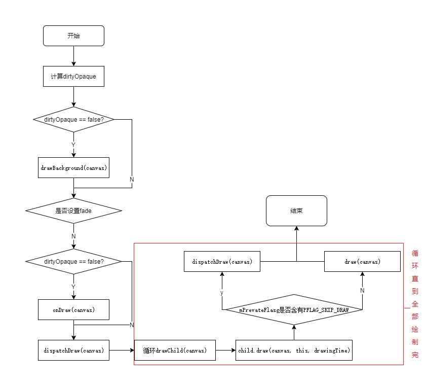

View绘制流程基本上是在ViewRootImpl.java中进行的，上面的流程图是按照第一次加载时的顺序。measure和layout过程没有太多复杂的地方，下面说下draw部分，尤其是在ViewGroup的draw流程。
draw逻辑
根据View.draw方法中的注释和代码，整个绘制步骤有6步，当然不是每一步都会执行，甚至都不执行。
- Draw the background
- If necessary, save the canvas’ layers to prepare for fading
- Draw view’s content
- Draw children
- If necessary, draw the fading edges and restore layers
- Draw decorations (scrollbars for instance)
view的绘制中，基本逻辑就是在draw(Canvas canvas)中进行的，正常情况下是会忽略第2和5步的，除非设置了垂直或水平的颜色渐变。

ViewGroup draw执行条件
ViewGroup基本是不需要draw自己的，只是去draw children，目前大部分情况下，只有两种情况下会draw自己：
- setWillNotDraw(false)：会设置
PFLAG_SKIP_DRAW标志 - 设置背景
在setFlags方法中有是否会设置PFLAG_SKIP_DRAW的几行代码，正是验证了上面两种情况：
1 | if ((mViewFlags & WILL_NOT_DRAW) != 0) { |
dispatchDraw方法就是开始循环绘制子View了，该方法的实现是在ViewGroup中，自定义View时也可以定制该方法，绘制子View的逻辑会在draw(Canvas canvas, ViewGroup parent, long drawingTime)，这也是该方法唯一被调用的地方。该方法通过判断是否有PFLAG_SKIP_DRAW标志决定是否执行子View的draw(canvas)方法：
1 | // Fast path for layouts with no backgrounds |
整个draw过程需要注意的就是ViewGroup的draw过程，View是总会执行的。
ViewGroup onDraw执行条件
ViewGroup执行draw方法之后，draw一开始先是判断dirtyOpaque的值，即判断是否有标志PFLAG_DIRTY_OPAQUE，若有则为true，否则为false。该值决定了是否执行drawBackground和onDraw方法，众所周知，View是会执行这两个方法的，但为什么ViewGroup会有时不执行呢？两者的区别是有没有子View，这样看来，是否有标志PFLAG_DIRTY_OPAQUE和子View应该有关系，接下来就先去找该标志被设置的地方，最终锁定到ViewGroup.invalidateChild(View child, final Rect dirty)方法，该方法是在子View执行invalidate时执行的。
1 | public final void invalidateChild(View child, final Rect dirty) { |
从代码中可以看出，当子View的isOpaque方法返回true时，则设置PFLAG_DIRTY_OPAQUE标志。该方法可以重写，实现自己想要的效果。那默认情况下，是否是Opaque（实心）是怎么判断的，这个答案可以在View.computeOpaqueFlags()中找到：
1 | public boolean isOpaque() { |
View全部满足computeOpaqueFlags中的三个条件，isOpaque则返回true。
通过上面的分析，最终找到了ViewGroup中drawBackground和onDraw的执行条件：子View是非实心的，即isOpaque返回false。这里还有一个前提，就是子View重绘执行invalidate并且没有硬件加速时。在第一次遍历时，是没有判断子View是否是实心的，那执行条件又是怎样的？其实刚开始分析draw执行的条件时就有答案了，只要执行draw就会执行drawBackground和onDraw，因为没有设置标志位，则dirtyOpapue一直为false。
draw总结
- View或ViewGroup是否是opaque的三个充分必要条件：
- 有背景
- 背景不透明
- 没有滚动条或者滚动条为overlay
- ViewGroup执行draw的充分不必要条件：
setWillNotDraw(false)- 设置背景
- ViewGroup执行
drawBackground和onDraw分两种情况：- 第一次遍历时，和执行draw的条件一样
- 子View重绘调用
invalidate时，充分必要条件是子View为透明非实心的